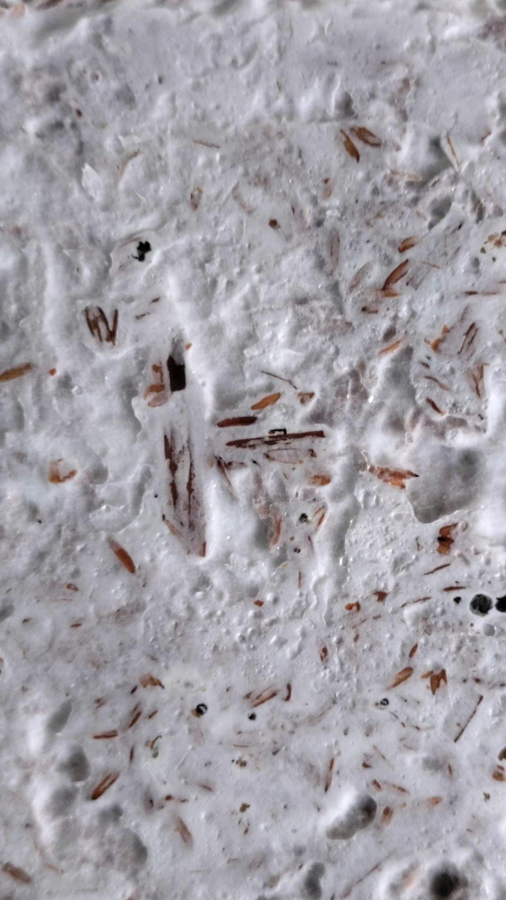
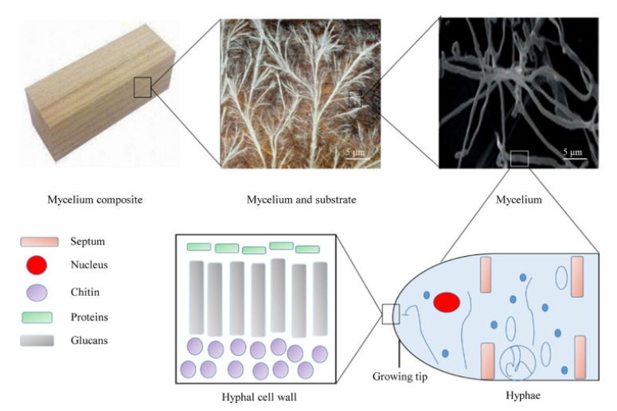

One sealed material coupon. One sacrificial food reserve. One short pulse of fungal growth around a defect - and a hard requirement that growth ends there.
damage opens reservelocal hyphae bridgereserve runs outinspect or removecoupon sketch / no organism has been built
sample views
Composite at hand scale. Hyphae underneath.
These views connect the visible composite surface to the hyphal network underneath it. That gap between material scale and cell scale is where most of my control problem sits.

the finished textureA close view of mycelium binding pieces of lignocellulosic substrate. This is manufactured composite material, not a self-repair experiment.
Camilla.vi · source · CC BY 4.0

from block to hyphaAn open reference figure connecting a composite block to the mycelium, hyphae, and cell-wall structure that produce its material behavior.
Open research figure · source details · CC0
central contradiction
The repair needs growth. The material needs a stop.
The organism needs moisture and nutrients to act, while moisture and biological activity can also accelerate decay. Activation, host protection, and termination must therefore be demonstrated as one coupled control problem.
observed elsewhere
Fungal networks can bind lignocellulosic composites
Move controlled growth from manufacture into a damage zone
The proposal embeds a finite nutrient source and uses local damage-associated conditions to restrict temporary hyphal bonding around a small defect.
failure boundary
Detection, host digestion, moisture, strength, and evolutionary drift
No mechanism has yet been selected that reliably distinguishes useful repair conditions, prevents wood consumption, preserves fungal viability, and terminates growth.
first sealed test
Localized benefit without measurable host damage
A contained coupon study must show repeatable activation only at defects, no extra substrate mass loss, partial mechanical benefit, no reproductive escape, and complete termination.
coupon anatomy
A finite growth pulse - not permanent fungus
The realistic first target is a replaceable, non-load-bearing panel or insulation element - not beams, occupied structural timber, or autonomous building-scale deployment.
01 · Damage interface
Define a physical activation window
Mechanical separation, local moisture, and release from a damaged nutrient capsule could form a simpler early trigger than assuming the fungus can accurately interpret an abstract “crack signal.”
02 · Finite metabolism
Feed the response without feeding on the structure
A replaceable hydrogel, biodegradable capsule, or sacrificial embedded layer would provide the intended carbon and nutrients. Host mass loss must be measured directly, not inferred from visual appearance.
Chitin-targeting defense is biologically complicated because fungal walls also contain chitin (Bowman & Free, 2006; Veliz et al., 2017). It should remain a later module; the first proof problem is safe localized repair and reliable growth termination.
stop conditions
Containment gets measured before strength
These gates describe a small sealed-coupon experiment. They are not performance claims or specifications for inhabited structures.
Measure
Minimum signal for continued development
Stop or redesign condition
Localization
At least 90% of new fungal biomass remains within the pre-registered repair boundary.
Growth reaches intact host zones, fasteners, coatings, or neighboring coupons.
Host protection
No statistically detectable extra host-material mass loss versus a sterile damaged control.
Evidence of lignocellulose consumption, softening, decay chemistry, or moisture retention.
Repair signal
At least 20% recovery of the pre-registered stiffness or crack-opening measure versus the damaged untreated control.
Visual filling occurs without repeatable mechanical benefit.
Termination
No renewed growth after nutrient exhaustion across three wet–dry challenge cycles.
Growth restarts without a new sacrificial nutrient input.
Reproductive containment
No detectable spores or reproductive structures outside the sealed matrix during and after challenge testing.
Any reproducible reproductive escape or transfer to an untreated substrate.
Durability
Retain at least 80% of the observed repair benefit after the pre-registered humidity and aging cycle.
The repaired region collapses, retains damaging moisture, or becomes more brittle than the control.
escape routes
The fungus does not care about the repair brief
Containment cannot depend on one genetic switch or on the expectation that a metabolically costly engineered behavior remains stable.
Scope
Replaceable, sealed components first
Limit early studies to retrievable non-load-bearing coupons and panels with visible inspection access.
Metabolism
Finite external nutrient dependence
Require an engineered repair-zone nutrient source and reject systems that obtain useful energy by consuming the host.
Reproduction
Layered containment
Combine developmental suppression, environmental dependence, physical sealing, reproductive monitoring, and disposal controls (Bayram et al., 2008).
Operations
Defined removal trigger
Remove the component if growth crosses its boundary, host mass declines, moisture persists, reproductive structures appear, or repair output drifts.
bench sequence
Start with one boring, sealed sample
Defense enzymes and genetically complex sensing stay out of scope until local growth, host protection, termination, and material benefit are independently demonstrated.
Species and substrate screen
Compare candidate non-pathogenic strains and inert/sacrificial feedstocks for bonding, host mass loss, moisture, and reproducibility.
Finite nutrient module
Measure growth with and without the sacrificial nutrient source and reject candidates that continue on the host material.
Damage-localization trial
Use sealed coupons with standardized defects and blinded mapping of fungal biomass beyond the repair boundary.
Mechanical characterization
Compare stiffness, crack opening, adhesion, humidity response, and aging against damaged and conventional-repair controls.
Containment challenge
Apply repeated wet–dry cycles, temperature changes, adjacent untreated substrates, and reproductive monitoring.
Optional defense module
Only after repair gates pass, study whether a localized defensive response adds benefit without self-damage or non-target effects.
lab reading
Sources behind the growth model
These papers support separate biology and material ideas. None of them demonstrates my proposed repair system in a finished structure.
Appels, F. V. W. et al. “Fabrication Factors Influencing Mechanical, Moisture- and Water-Related Properties of Mycelium-Based Composites.” Materials & Design, 2019. DOI
Elsacker, E. et al. “Mechanical, Physical and Chemical Characterisation of Mycelium-Based Composites with Different Types of Lignocellulosic Substrates.” PLOS ONE, 2019. DOI
Attias, N. et al. “Mycelium Bio-Composites in Industrial Design and Architecture.” Journal of Cleaner Production, 2020. DOI
Shen, S. C. et al. “Robust Myco-Composites as a Platform for Versatile Hybrid-Living Structural Materials.” Preprint, 2023. Preprint
Bowman, S. M., & Free, S. J. “The Structure and Synthesis of the Fungal Cell Wall.” BioEssays, 2006. DOI
Veliz, E. A., Martínez-Hidalgo, P., & Hirsch, A. M. “Chitinase-Producing Bacteria and Their Role in Biocontrol.” AIMS Microbiology, 2017. DOI
Bayram, Ö. et al. “VelB/VeA/LaeA Complex Coordinates Light Signal with Fungal Development and Secondary Metabolism.” Science, 2008. DOI
visual note: the mechanism diagram is my own HTML/CSS sketch. the two reference images are credited above and in IMAGE_CREDITS.md.